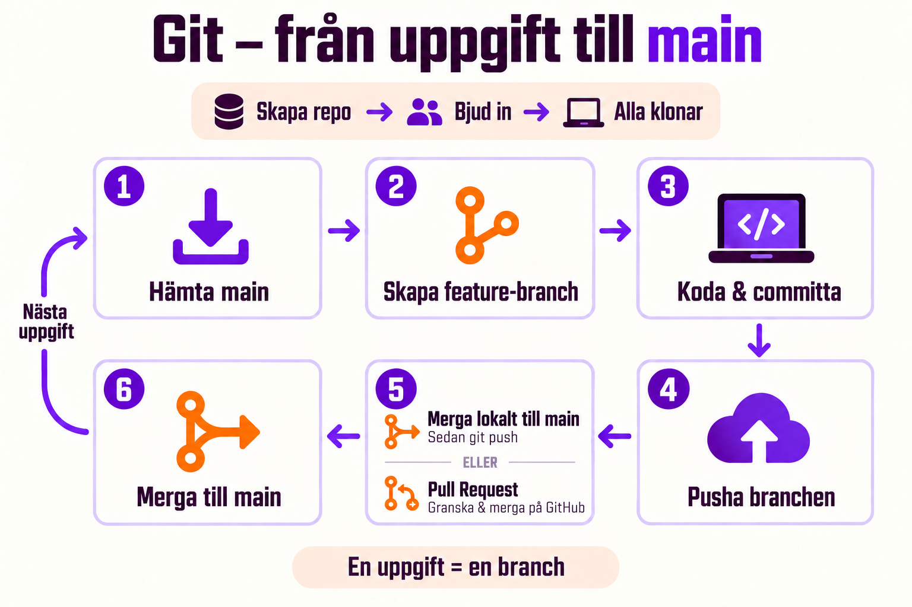

Grupparbete med Git
Så kommer ni igång snabbt – och så jobbar ni med Git i projektet utan att trampa på varandra.
Kort version
- En person skapar repot på GitHub och bjuder in resten.
- Alla klonar repot.
- Allt nytt görs på en egen
feature/…-branch. - Branchen kommer in i
mainpå ett av två sätt: en Pull Request på GitHub, eller en merge lokalt följd avgit push.

1. Kom igång – en person
Bestäm vem som gör det här. Det tar fem minuter, och resten av gruppen väntar under tiden.
- Gå till github.com → New repository.
- Ge repot ett namn, till exempel
Kaffekoppen. - Kryssa i Add a README file.
- Välj .gitignore template: VisualStudio. Då kommer mapparna
bin,objoch.vsaldrig med i repot. - Klicka Create repository.
- Bjud in gruppen: Settings → Collaborators → Add people.
Klona sedan repot och skapa projektet i Visual Studio inuti den klonade mappen:
git clone https://github.com/ditt-namn/Kaffekoppen.git
cd Kaffekoppen
# skapa solution och projekt i Visual Studio i den här mappen
git add .
git commit -m "Skapa projektet"
git pushGör den första commiten innan någon annan börjar koda. Då utgår alla från samma projekt.
2. Kom igång – alla andra
- Acceptera inbjudan. Den kommer på mejlen, eller syns på github.com/notifications.
- Klona repot:
git clone https://github.com/ditt-namn/Kaffekoppen.git- Öppna
.sln-filen i Visual Studio. Bygg och kör – fungerar det är du redo.
I Visual Studio går det också: Clone a repository på startskärmen → klistra in adressen.
3. Dela upp arbetet
- Skriv en lista över allt som ska göras. Använd gärna Issues på GitHub – en issue per uppgift.
- Varje uppgift blir en egen branch:
feature/meny,feature/kvitto,feature/rabatt. - Försök dela upp så att ni inte ändrar i samma fil samtidigt. Då blir det färre konflikter.
- Säg till i gruppen när du börjar på något – så gör inte två personer samma sak.
4. Så jobbar du – varje gång
git switch main
git pull # 1. hämta det senaste
git switch -c feature/meny # 2. ny branch för uppgiften
# ... koda, testa ...
git add .
git commit -m "Lägg till menyn" # 3. commita ofta
git push -u origin feature/meny # 4. skicka upp branchen5. Få in branchen i main. Det finns två vägar – välj en i gruppen och gör likadant.
Väg A – Pull Request på GitHub
- Skapa en Pull Request på GitHub: Compare & pull request → Create pull request.
- En annan i gruppen läser koden och klickar Merge pull request.
- Hämta den mergade koden:
git switch main
git pullVäg B – merga lokalt och pusha
git switch main
git pull # hämta det senaste först
git merge feature/meny # ta in din branch i main
git push # skicka upp main till GitHub| Väg A – Pull Request | Väg B – merge + push | |
|---|---|---|
| Var sker mergen? | På GitHub | På din dator |
| Granskar någon koden? | Ja, innan den kommer in | Nej – du ansvarar själv |
| Snabbhet | Lite långsammare | Snabbare |
| Passar när | Ni vill att någon tittar först | Små ändringar, eller när ni sitter tillsammans |
Börja sedan om från steg 1 med nästa uppgift.
5. När main har ändrats medan du jobbar
Någon annan har fått in sin kod. Hämta in den i din branch innan du mergar till main (oavsett väg A eller B):
git switch main
git pull # hämta det nya
git switch feature/meny
git merge main # ta in det nya i din branchBlir det en konflikt löser du den som vanligt – se Presentation: Merge conflicts. Sedan git add, git commit och git push.
6. Reglerna i gruppen
- Ingen committar direkt på
main– allt görs på en branch först. - En
feature/…-branch per uppgift. - Börja alltid med
git pullpåmain. - Små branches – merga ofta, hellre varje dag än en gång i veckan.
- Koden ska bygga innan den kommer in i
main. - Bestäm i gruppen: väg A (Pull Request), väg B (merge + push) eller båda. Kör ni Pull Requests godkänns de av någon annan än du själv.
Tips: väljer ni bara väg A kan ni skydda main så att ingen råkar pusha direkt. Settings → Branches → Add branch ruleset → kryssa i Require a pull request before merging. (Fungerar gratis på publika repon.) Då fungerar inte väg B längre.
7. Vanliga problem
| Det händer | Gör så här |
|---|---|
rejected … fetch first när du pushar | Någon har pushat före dig. Kör git pull och sedan git push igen. |
bin och obj kommer med i commiten | Repot saknar .gitignore. Lägg till en för Visual Studio. |
Du har jobbat på main av misstag – inte commitat än | git switch -c feature/namn – ändringarna följer med till den nya branchen. |
| Merge-konflikt | Läs konflikten, välj vad som ska stå kvar, ta bort <<< === >>>. Osäker? git merge --abort. |
| "Var står jag nu?" | git status och git branch. |
Klart när
- ☐ Repot finns på GitHub med
.gitignoreför Visual Studio. - ☐ Alla i gruppen är inbjudna och har klonat repot.
- ☐ Projektet bygger på allas datorer.
- ☐ Alla har gjort minst en
feature/…-branch och fått in den imain.